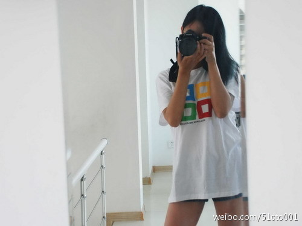

收到新手机, 只是把玩了一会儿, 就觉得原来的手机真是狗屎. 可是, 这个狗屎的定义下完, 又觉得自己对用了一年的东西太残忍, 这几天觉得还是得把旧手机好好整理整理, 给孩子当MP3播放器, 游戏机也可以. 很奇怪, 新手机来了后, 对旧手机的感觉倒好起来了.

Ada李力
2012-03-07
Ada李力
2012-03-07
技术社区可以从这文章中借鉴的: 人是主体；听比说重要；维护关系比发布信息重要；适合做社区的人是乐于分享和助人的 - ［观点］10件社会化媒体营销你需要了解的事情 | @SocialBeta（专注于社会化媒体）  网页链接
网页链接
Ada李力
2012-03-07
接到推销电话, 其实内容是我会感兴趣的, 但是想也不想就拒掉了. 广告如此泛滥, 只能用简单粗暴的方式去处理. 但如果是认识的人提同样的内容, 我很可能就会进一步去了解了. 在这个信息大爆炸的时代, 社交关系会起一个很好的过滤作用.
Ada李力
2012-03-07
这句话很有意思: "跟所有普通的开发者一样，我没有资金去做推广，唯一的渠道就是在各应用市场上架，所以应用市场有什么要求，我们就乖乖地听话。", 简单说, 就是需求.
- 